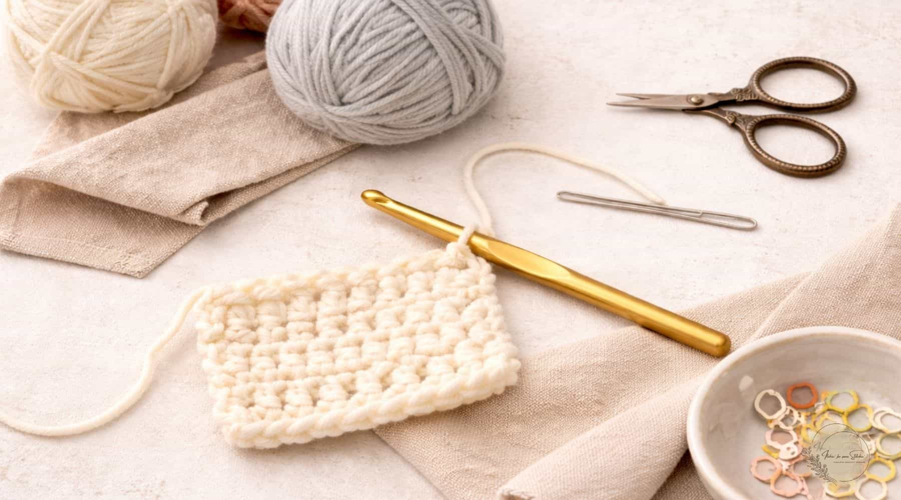

Tejido a crochet
Tejer a crochet es una técnica artesanal de tejido a mano donde se utiliza una sola aguja corta con un gancho en la punta para entrelazar hilos, lana o estambre y formar diferentes tramas y puntos.

Materiales y herramientas
Para comenzar a practicar crochet no se necesitan demasiados materiales. Los elementos principales son el ganchillo y el hilo o lana, aunque existen diferentes tipos y tamaños que pueden elegirse dependiendo del proyecto. Los ganchillos vienen en distintos grosores, y el tamaño adecuado normalmente depende del tipo de hilo que se utilice. También pueden ser útiles unas tijeras, una aguja lanera para esconder los extremos del hilo y marcadores de puntos para llevar un mejor control del tejido.
Elegir los materiales adecuados puede hacer que aprender sea mucho más sencillo. Para las personas que están comenzando, se recomienda utilizar un hilo de grosor medio y un ganchillo que permita distinguir fácilmente los puntos. A medida que se adquiere experiencia, es posible experimentar con diferentes materiales, colores y texturas para conseguir resultados completamente diferentes. La gran variedad de hilos disponibles permite adaptar cada proyecto al estilo y preferencias de quien lo realiza.
¿Qué se puede crear con crochet?
Una de las características más interesantes del crochet es la gran cantidad de cosas que se pueden elaborar. Con esta técnica es posible crear bufandas, gorros, bolsos, mantas, prendas de vestir, accesorios y elementos decorativos para el hogar. También se pueden realizar pequeños proyectos como flores, llaveros, posavasos o figuras decorativas, que son ideales para quienes están aprendiendo y quieren practicar diferentes puntos.
Otra creación muy popular son los amigurumis, pequeñas figuras tejidas que pueden representar animales, personajes, alimentos y todo tipo de objetos. Estos proyectos combinan creatividad y técnica, ya que permiten jugar con diferentes formas, colores y detalles. Gracias a todas estas posibilidades, el crochet puede convertirse tanto en un pasatiempo como en una forma de crear regalos personalizados, decorar espacios o incluso desarrollar pequeños emprendimientos con productos hechos a mano.
Puntos básicos de crochet
Aprender los puntos fundamentales es el primer paso para comenzar a dominar el crochet. A partir de estos puntos se pueden combinar diferentes técnicas y crear patrones más elaborados. Algunos de los puntos más utilizados son:
- Punto cadena: es uno de los puntos más sencillos y se utiliza frecuentemente para comenzar un proyecto.
- Punto bajo: crea un tejido compacto y firme, por lo que es muy utilizado en diferentes tipos de proyectos.
- Medio punto alto: tiene una altura intermedia y permite avanzar más rápidamente que el punto bajo.
- Punto alto: crea un tejido más abierto y flexible, y es uno de los puntos más comunes en patrones de crochet.
- Punto deslizado: se utiliza principalmente para unir puntos, cerrar vueltas o desplazarse dentro del tejido sin añadir mucha altura.
- Punto alto doble: es más alto que el punto alto y permite crear tejidos más sueltos y diseños con mayor movimiento.
Para aprender más sobre crochet y consultar diferentes patrones, puede visitar Superprof .